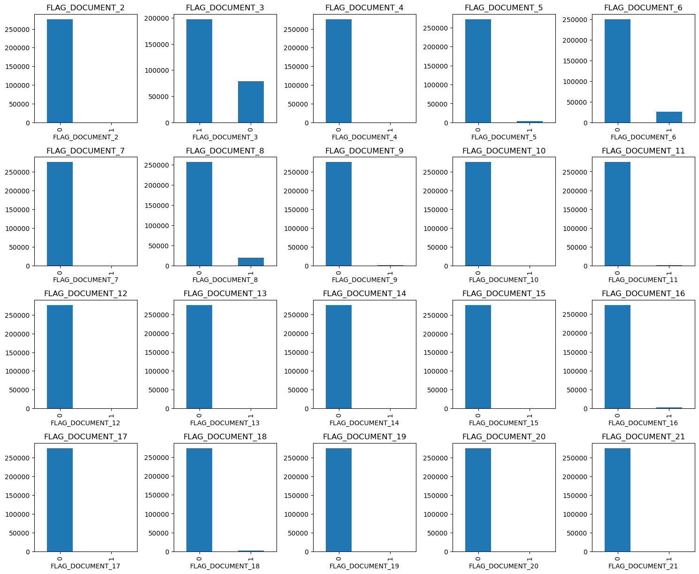
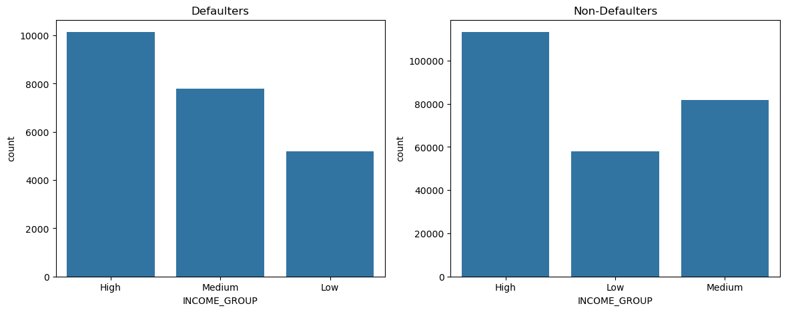
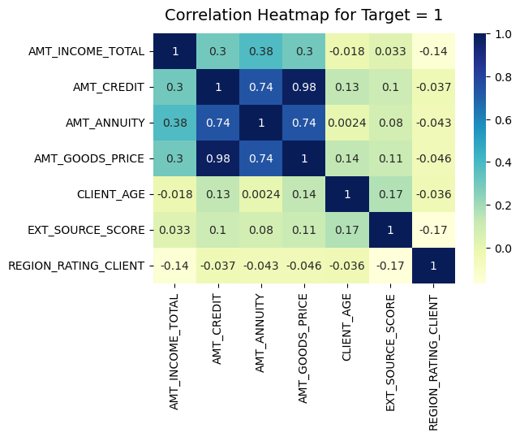
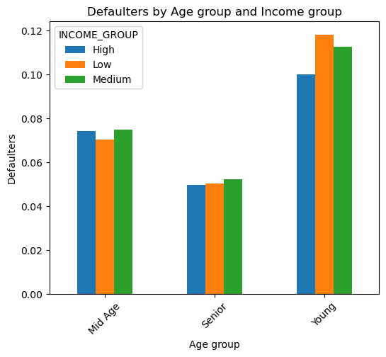

Credit Risk EDA
Finding the strongest drivers of loan default in 300,000+ applications
Problem
A consumer finance company approves loans partly on incomplete information, which creates two costly mistakes: rejecting applicants who would have repaid, and approving applicants who go on to default. This project analyzes the company's historical application data to identify which applicant and loan characteristics actually distinguish defaulters from reliable borrowers — insight that can feed directly into a risk model rather than gut-feel underwriting.
Approach
- Data cleaning: worked across two linked datasets (current and previous loan applications, ~307,500 and ~1.67M rows). Chose a different missing-value strategy per column based on its distribution — mean/median imputation where values were tightly clustered, mode imputation for count-like fields, and row deletion only where it cost under 1% of the data.
- Outlier handling on income, credit amount, and annuity fields before any comparison, so a handful of extreme values couldn't distort the conclusions.
- Feature engineering: converted raw day-counts into readable age and tenure fields, and binned age, income, credit amount, and external credit score into High/Medium/Low groups to make patterns comparable across segments.
- Univariate → segmented → bivariate analysis across categorical and continuous variables, then merged the current and previous application tables to test whether a client's prior loan history predicted their current risk.
Key Findings
- Younger applicants defaulted at a noticeably higher rate than senior citizens — age behaved as a real risk signal, not just a demographic detail.
- Counterintuitively, applicants in the higher income bracket accounted for more defaults than the lower-income group once volume was accounted for — income alone is a weak, sometimes misleading, risk proxy.
- The external credit bureau score was the cleanest signal in the dataset: low scorers defaulted at a far higher rate almost regardless of any other variable.
- Clients who had been refused on a previous application were more likely to default on their current loan than clients with no prior refusal — loan history carries forward.
- Lower credit amounts were, somewhat surprisingly, associated with a higher chance of default than larger loans in this dataset.

Data imbalance check across key categorical fields before analysis
Default counts by income group — the counterintuitive high-income pattern
Correlation structure among numerical variables, defaulters only
Age group vs. income group, segmented viewWhy It Matters
The point of this analysis isn't the charts — it's that a handful of these signals (external score, prior refusal, age band) could realistically feed a lightweight scoring rule that flags high-risk applications for a second look, without needing a full ML model in production. That's the same instinct behind the quality-audit work I do day to day: find the variable that actually explains the outcome, not the one that's easiest to look at.